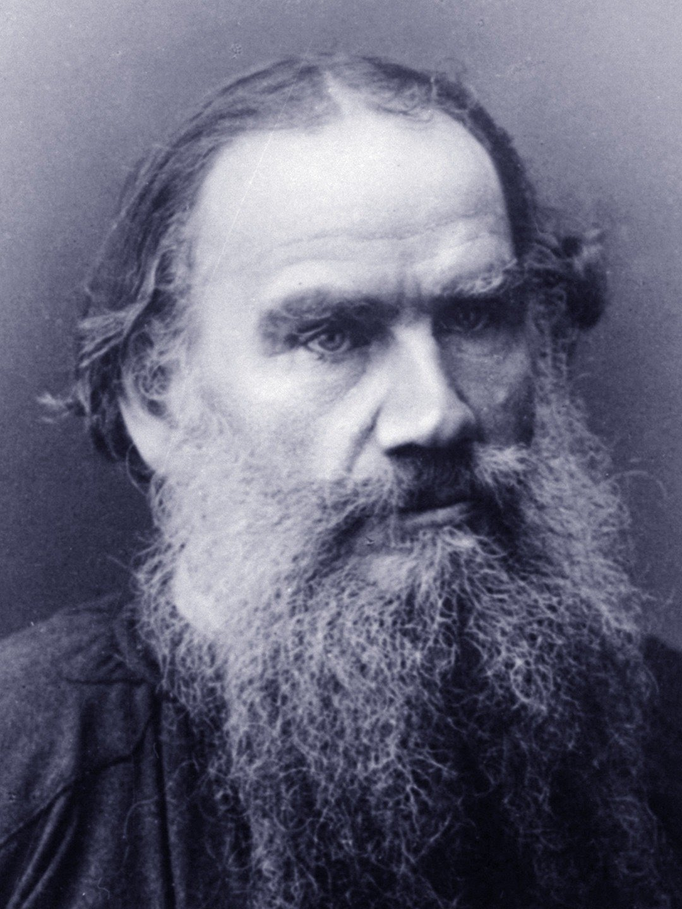

BUY BOOKS
Europe is more than a bloc of nations. It is also a collection of regions. Most regions radically differ from their respective countries. The ability of regional economies to withstand competition and to manage change is related to their capacity to innovate. The book presents all Greek Regional Programmes of Innovative Actions with emphasis to their categorisation according to different typologies. Their experience could serve as a beacon for regions with less favourable circumstances to develop a holistic regional innovation strategy.read more...
Category : MotivationPrice : 300RS
Greening IT is an interntionally collaborative, non-profit, creative commons licensed book dedicated to the preservation of the most important resource - planet earth itself. As the book details, our approach to preservation is not accomplished via pure environmentally focused policies, but instead by leveraging the most important and potent enabler of the Low-Carbon society - Information and Communication Technology (ICT).read more...
Category : SciencePrice : 300RS
Animal Farm by George Orwell is a fascinating and thought-provoking book that has captivated readers for decades with its powerful commentary on politics, power and corruption, especially the idea of communism and its impact on society on. Set on a farm in England, this allegorical tale follows a herd of farm animals who fall prey to their oppressive human farmer and establish a society based on principles of equality and justice but over time the pigs who were once the leaders of the rebellion turn greedy and oppressive themselves Enjoy your journey through these pages of this timeless classic appearance, and discover why it's a story which everyone should read.read more...
Category : PoliticsPrice : 300RS
We hope you enjoy reading the Obooko free edition of the dark and dystopian book that is 1984, where Big Brother reigns supreme and personal freedom is a thing of the past. In this thought-provoking book by George Orwell, we embark on a harrowing journey into a surveilled, authoritarian, crime-ruled society. As we explore the chilling parallels between this imagined world and our current reality, we are forced to face the simple question: Could this nightmare be our future? Download this free book from obooko in any of three digital formats, and explore its lasting relevance to our society today.read more...
Category : WarPrice : 300RS
We hope you enjoy reading the Obooko free edition of the dark and dystopian book that is 1984, where Big Brother reigns supreme and personal freedom is a thing of the past. In this thought-provoking book by George Orwell, we embark on a harrowing journey into a surveilled, authoritarian, crime-ruled society. As we explore the chilling parallels between this imagined world and our current reality, we are forced to face the simple question: Could this nightmare be our future? Download this free book from obooko in any of three digital formats, and explore its lasting relevance to our society today.read more...
Category : WarPrice : 300RS
LEGENDARY AUTHORS
Leo Tolstoy
Count Lev Nikolayevich Tolstoy, usually referred to in English as Leo Tolstoy, was a Russian writer. He is regarded as one of the greatest and most influential authors of all time.
Charles Dickens
Charles John Huffam Dickens was an English novelist and social critic who created some of the world's best-known fictional characters, and is regarded by many as the greatest novelist of the Victorian era

JK Rowling
Joanne Rowling CH OBE FRSL; born 31 July 1965, better known by her pen name J. K. Rowling, is a British author and philanthropist. She wrote Harry Potter, a seven-volume fantasy series published from 1997 to 2007.
George Orwell
Eric Arthur Blair was an English novelist, poet, essayist, journalist, and critic who wrote under the pen name of George Orwell. His work is characterised by lucid prose, social criticism, opposition to totalitarianism, and support of democratic socialism.

William Shakespeare
William Shakespeare was an English playwright, poet, and actor. He is widely regarded as the greatest writer in the English language and the world's pre-eminent dramatist. He is often called England's national poet and the "Bard of Avon"